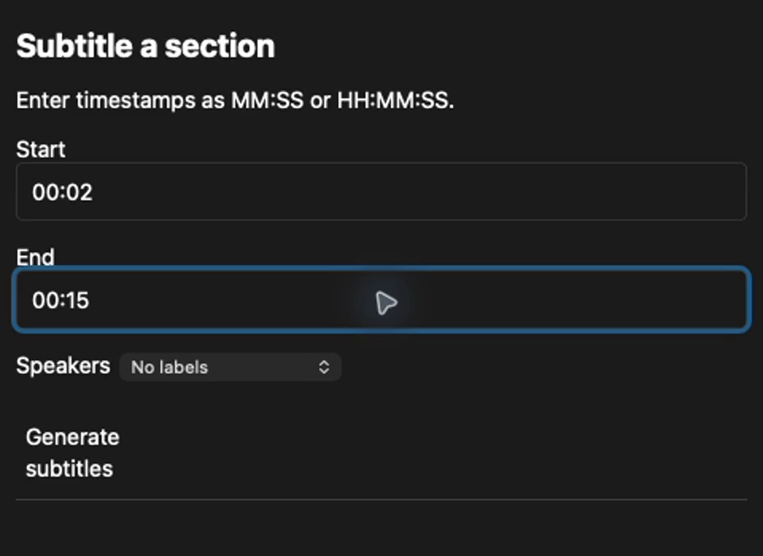
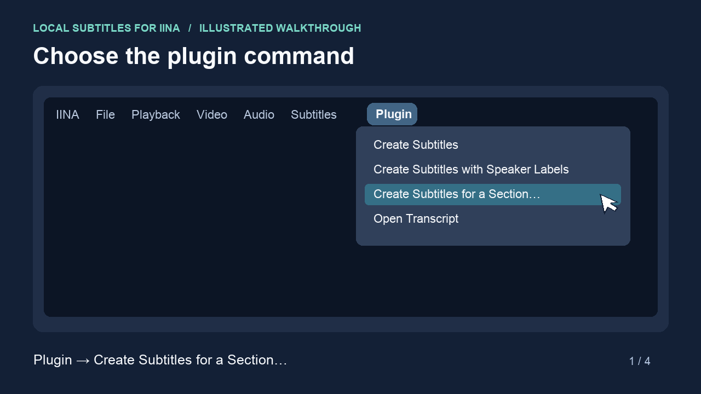
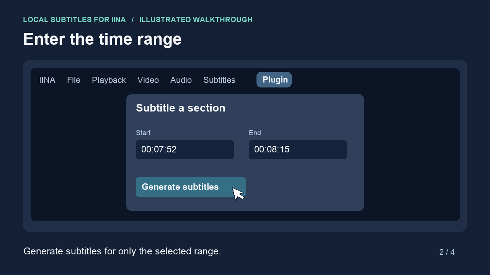
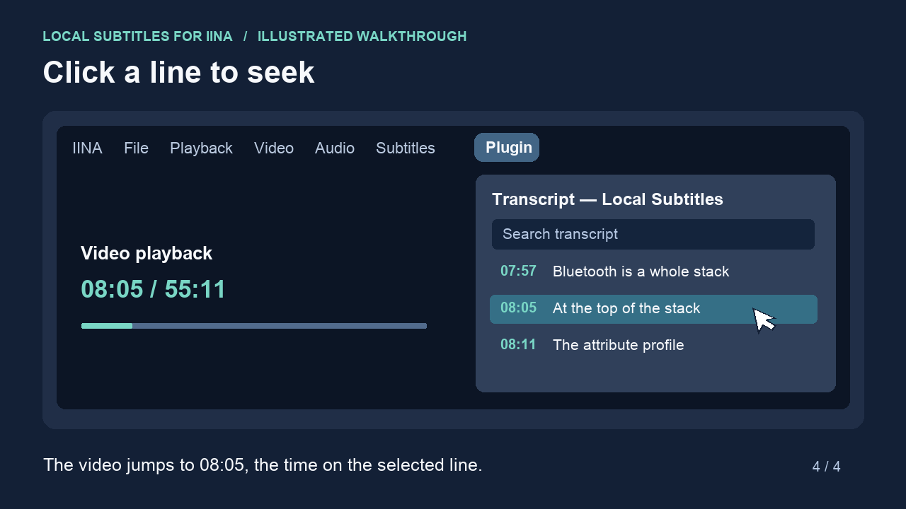

Local Subtitles for IINA
Vibe-coded project: I supplied the idea, requirements, and feedback; AI wrote the implementation.
I wanted captions for recordings that came without them, especially when I only needed to revisit a few minutes of a long lecture. I added a local transcription workflow to the video player I already use.
What it does
The plugin transcribes the selected audio track in IINA. I can subtitle a whole recording or enter a start and end time. Each line in the searchable transcript jumps to its original position in the video. The plugin saves an SRT beside the source and can export a full-length MKV with a selectable subtitle track.
Check out the GitHub repo (currently private, email me for access).
How to use it
Open a local video in IINA and choose **Plugin → Create Subtitles for a Section…**. Enter the start and end times and click **Generate subtitles**. When the searchable transcript opens, click a line to jump to its timestamp in the video.
The screen recording shows the actual IINA section form being filled out on a sample recording. The illustrated walkthrough and stills also show the menu, form, progress display, and transcript. They recreate the steps from the lecture test using illustrative captions.
How it works
FFmpeg extracts the selected audio, whisper.cpp runs Whisper Large v3 Turbo locally, and the IINA Plugin API connects the transcript to playback. Optional speaker labels use sherpa-onnx. I can supply a speaker count when I know it.
What I tested
I tested a 55-minute lecture from end to end, including jumping from the transcript to playback and exporting the recording with all five audio tracks and 375 subtitle cues. I also tested an excerpt 23 hours into a synthetic recording to check that section timestamps stayed aligned.
I compared Whisper Turbo with Parakeet on lecture excerpts and scripted clips. Their errors differed, especially on background speech and technical terms. I kept Turbo as the default and made speaker labels optional after automatic diarization split one lecturer into many apparent speakers.
Credits
Whisper AutoSub (Local) inspired the percentage progress display. SRT Generator inspired the Parakeet comparison, and IINA Apple Live Subtitles was a reference for live captioning.



